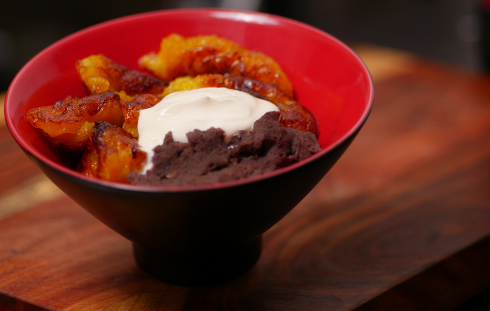

I was eager to make this recipe for my YouTube Channel. It’s one of my favorite combination of foods to eat for breakfast or even dinner. It serves as a great base layer for any additional food you want to pair it with.
For example you could add some eggs to this. Perhaps some sunny side up or scrambled with chorizo. Then you can have a side of avocado along with some hard cheese (queso duro). Don’t forget your tortilla or a nice piece bread. And last but not least a hot cup of coffee!
Refried Black Beans
Equipment
- Blender
- Pan
Ingredients
- 1 Can Black Beans
- 1/5 Onion
- 1/4 tsp Yellow Mustard
- 1/2 tsp Worcestershire Sauce
- 1/4 tsp Garlic Powder
- 1/2 tsp Salt – (This is to taste so add a good pinch and taste. Repeat if necessary.)
Instructions
- Place the beans from the can into the blender with enough of the water they come with (I only do this for organic beans). If you add too much water you can always cook it down afterwards.
- Add 1/4 tsp of Mustard. Try not to add more as the flavor comes through very easily. You can can even start with less just incase you want a sense of what it adds to the final product.
- Add 1/2 tsp of Worcestershire Sauce – Again this is a strong flavored ingredient so be careful how much you add. Start with less if this is your first time to get a sense of the flavor.
- Blend the beans until completely smooth. Set aside.
- Heat a pan with medium-high heat and add 1-2 Tbsp of oil.
- Chop 1/5 of a medium to large onion and add it to the hot pan.
- Fry the onion and stir occasionally until the edges are a bit charred. That chard will bring an extra flavor to the beans.
- Now add the blended beans and mix.
- Add a 1/4 tsp of Garlic Powder and about 1/2 tsp of Salt (to taste)
- The beans will come to a boil quickly. Stir them and lower the fire so they don't splatter on you.
- Cook until they are thicker then when you first started. You want them to be a bit solid when they cool off. Take them off the fire and set aside.
Fried Plantains | Maduros
Equipment
- Frying Pan - That you trust not to have them stick.
Ingredients
- 1 Large Plantain (Ripe can be when the Plantain is showing darkness on the skin.)
- Your frying oil of choice
Instructions
- Squeeze it! – I like to soften up the plantain by squeezing it all through out with my thumbs.
- Peel it! – Remove all of it!
- Cut it! You can do this is different forms. I like to cut it diagonal and have the 4. thickness be about 1 inch or 2.5 cm
- Heat up pan on a medium-low heat and add a generous amount of oil to cover the bottom of the pan.
- Place the plantains away from you.
- Once you see some browning around the edges of the plantains then you can flip them. They need to have a golden brown.
- Brown on both sides and they should take on a soft texture if you got the appropriate plantain. I usually have better luck with large thick plantains. The thinner ones tend to be dryer.
- Once browned set them aside and remove the extra oil they might be dripping.